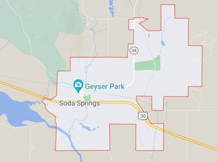

Soda Springs, Idaho
Weather Summary
Currently: 50
High: 50
Wind Chill: N/A
Humidity: N/A
Wind Speed: 5
5 Day Forecast
Forest Service announces some seasonal closures
By: Jerry Painter
With winter approaching, the Caribou-Targhee National Forest wants to remind people of seasonal closures to some roads and areas beginning today. Seasonal closures protect migrating and wintering wildlife and help manage conflicting uses of some areas. The Caribou-Targhee encourages winter recreationists to obtain a current map designating what activities are allowed before traveling in the forest.

Contact Information
- Address: 9 W 2nd S, Soda Springs, ID 83276
- Phone Number: (208) 547-2600
- Website: elementalforecast.com